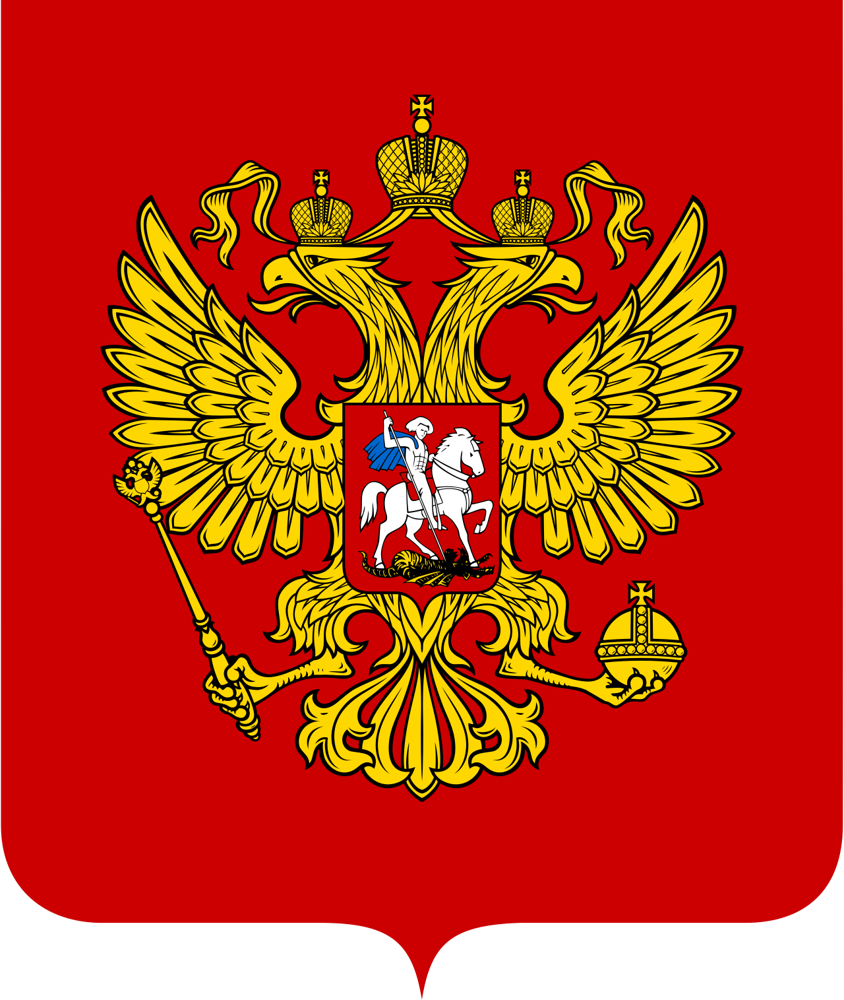
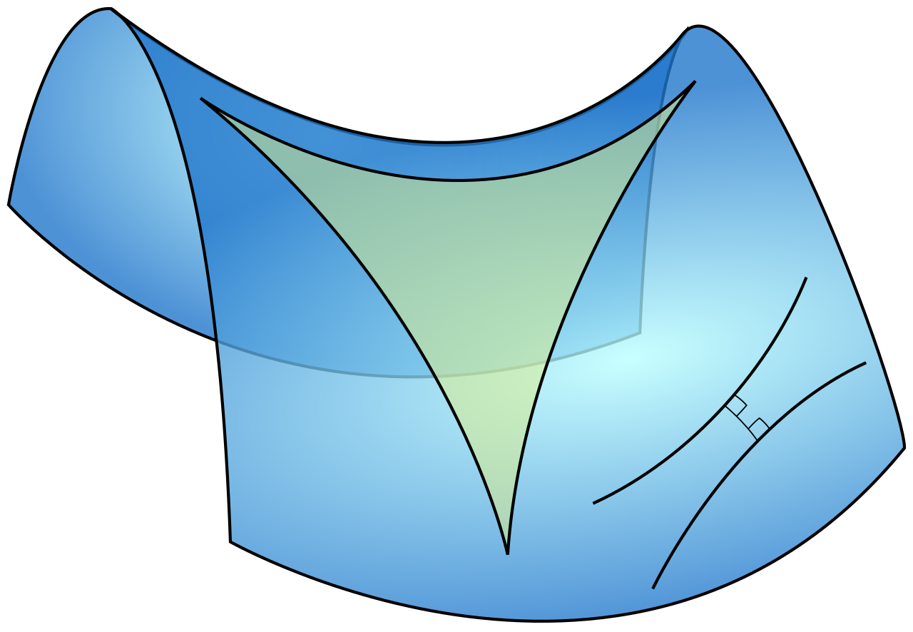
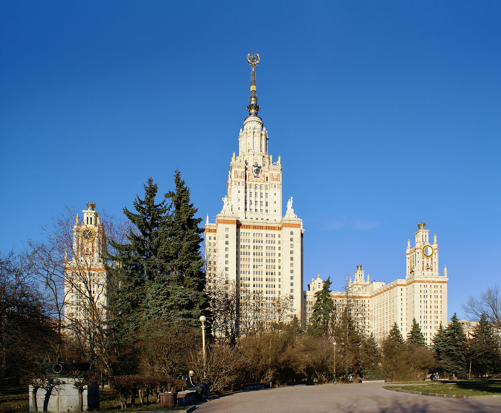
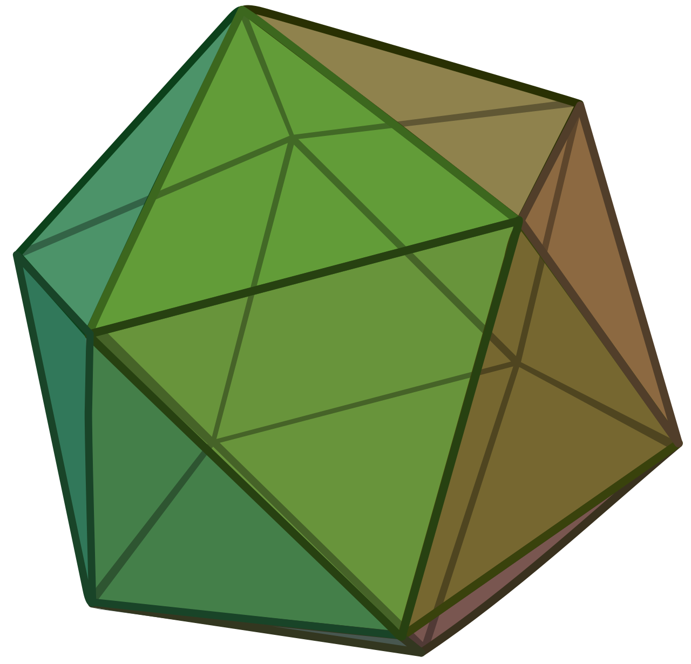
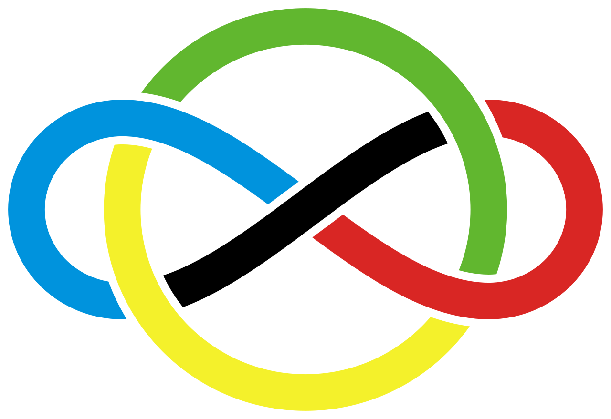

Главные олимпиады для 11 класса
Перечень олимпиад РСОШ — официальный список олимпиад, дипломы которых дают льготы при поступлении (БВИ или 100 баллов за ЕГЭ).

Всероссийская олимпиада (ВсОШ)
Четыре этапа: школьный, муниципальный, региональный, заключительный. Победители и призёры заключительного этапа поступают без вступительных испытаний в любой вуз страны на профильное направление.
vos.olimpiada.ru
Турнир городов
Международная олимпиада, проходит дважды в год — осенью и весной — в десятках городов мира. Задачи славятся красотой и нестандартностью, не требуют школьных формул, требуют идей.
turgor.ru
«Высшая проба»
Олимпиада НИУ ВШЭ. Два тура: онлайн отборочный и очный заключительный. Дипломы дают льготы при поступлении в ВШЭ и многие другие вузы.
olymp.hse.ru
«Покори Воробьёвы горы»
Олимпиада МГУ имени М. В. Ломоносова. Один из самых уважаемых конкурсов для поступления в МГУ. Сильное жюри, красивые задачи.
pvg.mk.ru
Московская математическая олимпиада
Одна из старейших и сильнейших олимпиад страны — проводится с 1935 года. Призёры получают льготы при поступлении в МГУ и другие вузы.
mmo.mccme.ru
«Физтех»
Олимпиада МФТИ. Сильна задачами с параметром и стереометрией. Стиль задач близок к ЕГЭ повышенной сложности.
olymp.mipt.ru
Олимпиада СПбГУ
Состязание сильной математической традиции Санкт-Петербургского университета. Особенно интересна задачами по теории чисел и алгебре.
olympiada.spbu.ru
Курчатовская олимпиада
Олимпиада НИЦ «Курчатовский институт». Хороший формат, разумные задачи, льготы во многие технические вузы.
olymp.kurchatov.ru
IMO — Международная олимпиада
Высшая ступень для школьников: ежегодно соревнуются сборные сотни стран. Решают шесть задач за два дня по 4 часа 30 минут. Российская команда стабильно входит в число сильнейших.
imo-official.org